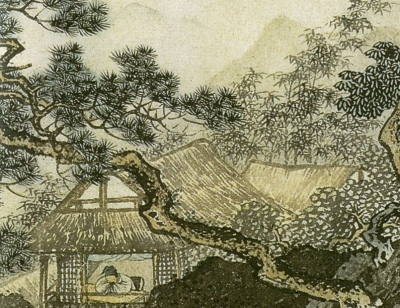

Sacred Texts Confucianism
Buy this Book at Amazon.com
|

Detail of 15th C.E. scroll by Chou Ch'en (Public Domain Image) |
The Book of Poetrytr. by James Legge[1876] |
This is the unabridged translation of the Book of Odes (the Shih Ching) by James Legge. Legge translated the Chinese Book of Odes, one of the Five Chinese Classics, in 1876. This edition, scanned from a reprint published in Shanghai in 1931, includes all of the English translations, as well as some of the introductory matter from the 1876 edition. It omits the Chinese text found in the original publications.
Legge also did all of the Chinese translations in the Sacred Books of the East series, including an abridged version of the Shih Ching in SBE 3.